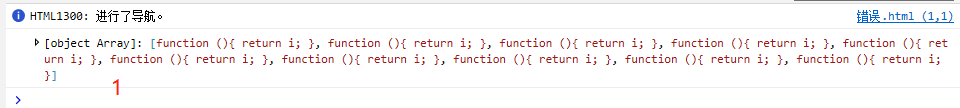
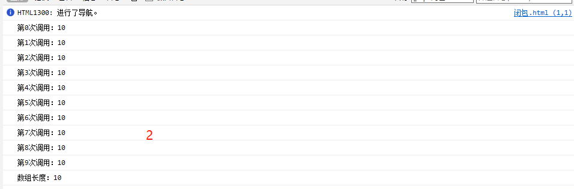
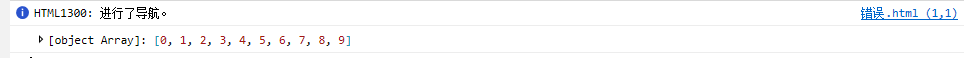

闭包只能取得包含函数中任何变量的最后一个值。
1 <!DOCTYPE html>
2 <html>
3 <head>
4 <title>闭包与变量</title>
5 </head>
6 <body>
7 <script type="text/javascript">
8 function createFunctions(){
9 var result=new Array();
10 for(var i=0;i<10;i++){
11 result[i]=function(){
12 return i;
13 };
14 }
15 return result;
16 }
17
18 // var data=createFunctions();
19 // console.log(data);//打印显示的是函数，如下图1
20
21 //修改如下则可以显示函数数组返回的值。如下图2
var funcArray = createFunctions();
22 for(var j=0;j<funcArray.length;j++){
23 console.log("第"+j+"次调用："+funcArray[j]());
24 }
25 </script>
26 </body>
27 </html> 

“闭包只能取到包含函数中任何变量的最后一个值”得到验证。因为每个函数的作用域链中都保存着createFunctions（）函数的活动对象，所以他们引用的是同一个变量i
可以通过创建另一个匿名函数强制让闭包的行为符合预期。
示例如下：
<!DOCTYPE html>
<html>
<head>
<title>闭包与变量</title>
</head>
<body>
<script type="text/javascript">
function createFunctions(){
var result=new Array();
for(var i=0;i<10;i++){
result[i]=function(num){
return function(){
return num;
};
}(i);
}
return result;
}
// var data=createFunctions();
// console.log(data);
var funcArray = createFunctions();
for(var j=0;j<funcArray.length;j++){
console.log("第"+j+"次调用："+funcArray[j]());
}
</script>
</body>
</html>在重写了createFunctions（）函数后，每个函数就会返回各自不同的索引值了。我们没有直接把闭包函数赋值给数组，而是定义了一个匿名函数，并将立即执行函数的结果赋值给数组（返回的是一个函数）。这里的匿名函数有一个num参数，也就是最终的函数要返回的值。在调用每个匿名函数时，我们传入变量i。由于函数参数是按值传递，所以就会将变量i的当前值复制给参数num。而在这个匿名函数内部，又创建并返回一个访问num的闭包。这样一来，result数组中的每个函数都有自己num变量的一个副本，因此就可以返回各自不同的数值了。
另外：在验证过程中走弯路的收获
<!DOCTYPE html>
2 <html>
3 <head>
4 <title>闭包与变量</title>
5 </head>
6 <body>
7 <script type="text/javascript">
8 function createFunctions(){
9 var result=new Array();
10 for(var i=0;i<10;i++){
11 result[i]=function(){
12 return i;
13 }();//()执行匿名函数结果赋值给result[i],此时result为数值数组
14 }
15 return result;
16 }
17
18 var data=createFunctions();
19 console.log(data); //如此输出的则是相应的I值，因为此时result为数值数组
21
25 </script>
26 </body>
27 </html> 运行结果如下图：

总结：
学习了闭包只能取得包含函数任何变量的最后一个值。
匿名函数调用。
函数数组。